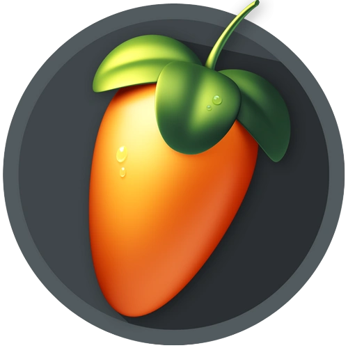

Sampler Love🎶
Een nummer die ik heb gemaakt!
Te vinden op SoundCloud.

Sampler Love op SoundCloud.
Programma:

Genre: Mijn eigen stijl!😄
Thema: Digitale Muziek
Jaar: 2026
Dit project is een nummer die ik heb gemaakt!
Ik ben begonnen met samples zoeken in de FL Cloud, en daarop verder te bouwen met meer samples.
Ik heb ook effecten toegevoegd op de meeste samples.
Ook heb ik sound effects toegevoegd in het nummer.
Hieronder kan je het nummer luisteren op SoundCloud!
Op deze site kan je dingen vinden zoals mijn projecten, informatie over mij en veel meer!
Druk op een van deze knoppen om naar een specifieke pagina te gaan.